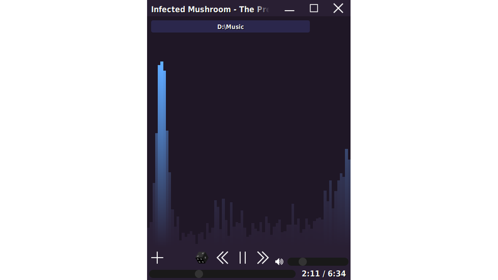

Projects |
|
TLMy "standard" library for C++. A collection of widely used data structures, algorithms and various utilities. #include <tl/main.h> #include <tl/console.h> #include <tl/string.h> #include <tl/cpu.h> #include <tl/file.h> using namespace tl; s32 tl_main(Span<Span<utf8>> args) { print("Hello, "); defer { println("World!"); }; auto str = with(temporary_allocator, to_string(42)); float t = 150; v3f color = map(t, 100, 200, v3f{1,0,0}, v3f{0,1,0}); println("This is {} core CPU", get_cpu_info().logical_processor_count); for_each(get_items_in_directory("."), [&] (auto item) { if (item.kind == FileItem_directory) { return ForEach_break; } println(item.name); return ForEach_continue; }); return 0; } |
DungerA 2d horde slayer shooter with raytracing and magic |
RoadgenCar physics playground |
DrawtSimple application for drawing and drafting |
SoundestSimple audio player  |
SimplexProgramming Language
|
| Code Highlighting: highlight.hohli.com |